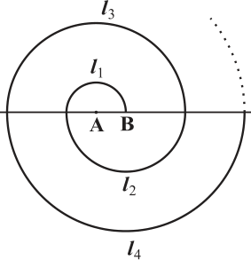
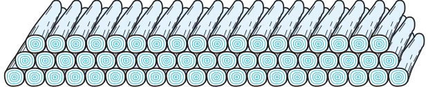
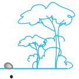
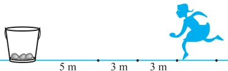

EXERCISE
- 1.Find the sum of the following APs:
- (i)2, 7, 12, . . ., to 10 terms. (ii) \(- 37\), \(- 33\), \(- 29\), . . ., to 12 terms.
- (iii)0.6, 1.7, 2.8, . . ., to 100 terms. (iv) \(\frac{1}{15}\) , \(\frac{1}{12}\) , \(\frac{1}{10}\) , . . ., to 11 terms.
- 2.Find the sums given below :
- (i)\(7 + 10 2 + 14 +\) . . . \(+ 84\) (ii) \(34 + 32 + 30 +\) . . . \(+ 10\)
- (iii)\(- 5 +\) ( \(- 8) +\) ( \(- 11) +\) . . . + ( \(- 230)\)
- 3.In an AP:
- (i)given \(a = 5\), \(d = 3\), \(a_{n} = 50\), find n and S_{n}.
- (ii)given \(a = 7\), \(a_{13} = 35\), find d and S_{13}.
- (iii)given \(a_{12} = 37\), \(d = 3\), find a and S_{12}.
- (iv)given \(a_{3} = 15\), \(S_{10} = 125\), find d and a_{10}.
- (v)given \(d = 5\), \(S_{9} = 75\), find a and a_{9}.
- (vi)given \(a = 2\), \(d = 8\), \(S_{n}= 90\), find n and a_{n}.
- (vii)given \(a = 8\), \(a_{n} = 62\), \(S_{n} = 210\), find n and d.
- (viii)given \(a_{n} = 4\), \(d = 2\), \(S_{n} = - 14\), find n and a.
- (ix)given \(a = 3\), \(n = 8\), \(S = 192\), find d.
- (x)given \(l = 28\), \(S = 144\), and there are total 9 terms. Find a.
- 4.How many terms of the AP : 9, 17, 25, . . . must be taken to give a sum of 636?
- 5.The first term of an AP is 5, the last term is 45 and the sum is 400. Find the number of terms
and the common difference.
- 6.The first and the last terms of an AP are 17 and 350 respectively. If the common difference
is 9, how many terms are there and what is their sum?
- 7.Find the sum of first 22 terms of an AP in which \(d = 7\) and 22nd term is 149.
- 8.Find the sum of first 51 terms of an AP whose second and third terms are 14 and 18
respectively.
- 9.If the sum of first 7 terms of an AP is 49 and that of 17 terms is 289, find the sum of
first n terms.
- 10.Show that a_{1}, a_{2}, . . ., a_{n}, . . . form an AP where a_{n} is defined as below :
- (i)\(a_{n} = 3 + 4n\) (ii) \(a_{n} = 9 - 5n\)
Also find the sum of the first 15 terms in each case.
- 11.If the sum of the first n terms of an AP is \(4n - n^{2}\), what is the first term (that is S_{1})? What
is the sum of first two terms? What is the second term? Similarly, find the 3rd, the 10th and the nth terms.
- 12.Find the sum of the first 40 positive integers divisible by 6.
- 13.Find the sum of the first 15 multiples of 8.
- 14.Find the sum of the odd numbers between 0 and 50.
- 15.A contract on construction job specifies a penalty for delay of completion beyond a
certain date as follows: ` 200 for the first day, ` 250 for the second day, ` 300 for the third day, etc., the penalty for each succeeding day being ` 50 more than for the preceding day. How much money the contractor has to pay as penalty, if he has delayed the work by 30 days?
- 16.A sum of ` 700 is to be used to give seven cash prizes to students of a school for their
overall academic performance. If each prize is ` 20 less than its preceding prize, find the value of each of the prizes.
- 17.In a school, students thought of planting trees in and around the school to reduce air
pollution. It was decided that the number of trees, that each section of each class will plant, will be the same as the class, in which they are studying, e.g., a section of Class I will plant 1 tree, a section of Class II will plant 2 trees and so on till Class XII. There are three sections of each class. How many trees will be planted by the students?
- 18.A spiral is made up of successive semicircles, with centres alternately at A and B,
starting with centre at A, of radii 0.5 cm, 1.0 cm, 1.5 cm, 2.0 cm, . . . as shown in Fig. 5.4. What is the total length of such a spiral made up of thirteen consecutive semicircles? (Take \(\pi = \frac{22}{7}\) )

Fig. 5.4
[Hint : Length of successive semicircles is l_{1}, l_{2}, l_{3}, l_{4}, . . . with centres at A, B, A, B, . . ., respectively.]
- 19.200 logs are stacked in the following manner: 20 logs in the bottom row, 19 in the next row,
18 in the row next to it and so on (see Fig. 5.5). In how many rows are the 200 logs placed and how many logs are in the top row?

Fig. 5.5
- 20.In a potato race, a bucket is placed at the starting point, which is 5 m from the first potato,
and the other potatoes are placed 3 m apart in a straight line. There are ten potatoes in the line (see Fig. 5.6).


Fig. 5.6
A competitor starts from the bucket, picks up the nearest potato, runs back with it, drops it in the bucket, runs back to pick up the next potato, runs to the bucket to drop it in, and she continues in the same way until all the potatoes are in the bucket. What is the total distance the competitor has to run?
[Hint : To pick up the first potato and the second potato, the total distance (in metres) run by a competitor is \(2 \times 5 + 2 \times (5 + 3)]\)